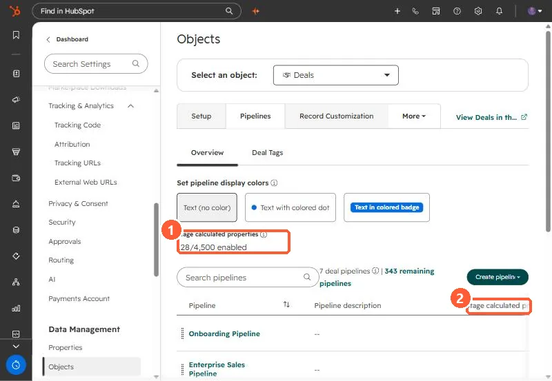
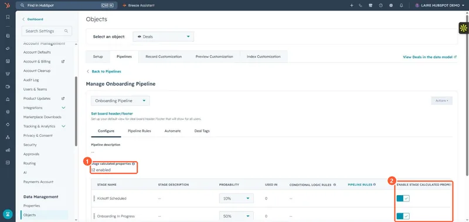

Short answer
HubSpot's KB says stage calculated properties (Date entered, Date exited, Latest time in, Cumulative time in) are turned off by default for new pipelines and pipeline stages. Each stage now has an Enable stage calculated properties switch in the pipeline's Configure tab. If it was off while deals moved, there is no Date entered value to report on, so switch it on for any stage you plan to measure before deals start moving through it.
1. The account count
The deal Pipelines page in my demo portal shows how many stage calculated properties are on across all pipelines: 128 of 4,500.


2. The per-stage switch
Open a pipeline. The Configure tab lists each stage with an Enable stage calculated properties switch. This pipeline has 12 enabled.


3. What you lose when it is off
- Date entered and Date exited for the stage.
- Latest time in and Cumulative time in, which HubSpot calculates from those dates.
HubSpot describes the change as a way to stop thousands of unused properties being created. The cost is that reports and workflows built on those properties have nothing to read for stages that were left off. The developer changelog flags the same change for integrations that expect these properties on every stage. To find stage IDs for these property names, see finding pipeline and stage IDs.